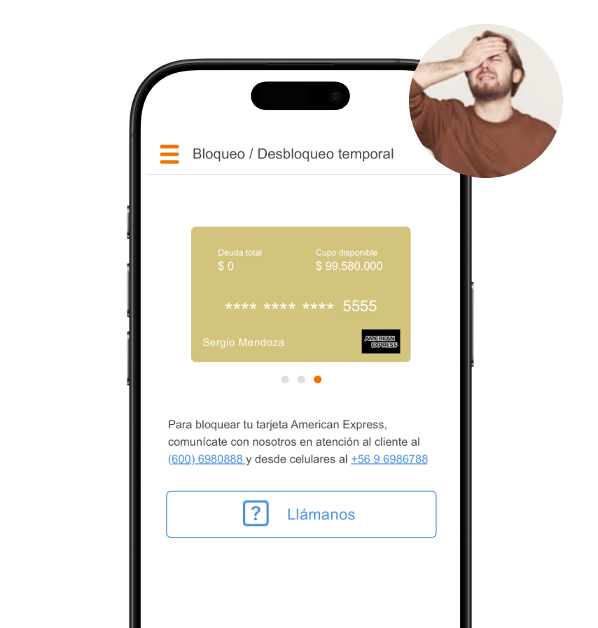

Context
In Chile, Itaú customers often lost or temporarily misplaced their debit or credit cards. This triggered a high volume of support calls—around 3,000 per month—just to perform manual card blocks. This not only saturated support teams but also introduced anxiety in users who needed immediate action. There was no clear self-service option in the app, and customers had to rely on phone channels to solve a time-sensitive issue.